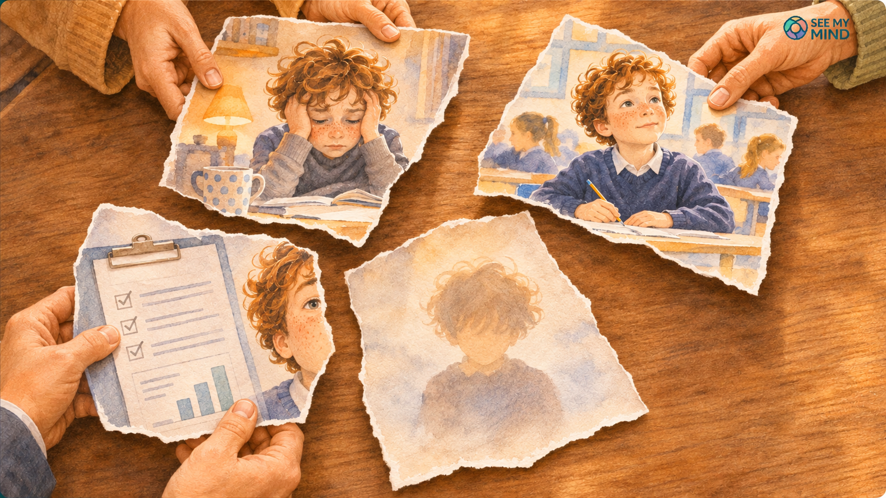

Fuller understanding
Home context, pupil voice, observations and support history come together around the child.
See the whole child, together
See My Mind joins home context, the child’s own voice, school observations and support history into one shared understanding of what is happening and what helps.

The problem
“Everyone cared. But nobody had the whole picture.”
A child can look settled at school and struggle at home. A parent can know what helps, while the information sits in a message nobody sees in time. A teacher can discover a successful strategy, but it can disappear when the class changes.
See My Mind connects those everyday pieces so the people supporting a child can begin from understanding, not from scratch.
The quiet child
“He's no trouble at all.”
What Luca's teacher says at parents' evening.
Luca is seven. He sits quietly, follows the routine and never causes a fuss. But he is working incredibly hard just to hold it together. All day he watches, copies and masks.
By the time he gets home, he has nothing left. The exhaustion happens behind the front door, where school never sees it. Term after term, he slips quietly through the net.
It is not because his teachers do not care. One teacher with thirty children cannot see every piece of a child's day. See My Mind helps the people around a child connect those pieces.
What changes
See My Mind helps the people around a child work from the same understanding while keeping each person’s view focused and appropriate.
Home context, pupil voice, observations and support history come together around the child.
Important context becomes visible sooner, before difficulties have time to escalate.
Everyone can see what has been tried, what helped and what may be worth repeating.
Useful understanding does not disappear when teachers, classes or support arrangements change.
Parents, children, teachers, TAs and SENCOs contribute different perspectives to one shared picture.
Evidence builds as the day happens, rather than being chased when a review arrives.
A day with See My Mind
A parent shares that sleep was difficult and breakfast was skipped.
The child checks in with a few taps, without needing to explain everything in words.
The teacher and TA see relevant context and record what happens while it is fresh.
Home hears what went well and what helped, not only what went wrong.
Why it matters
Context changes what a moment means.
What a child loves, achieves and finds helpful matters too.
Technology supports decisions. It never replaces the people who know the child.
Start a conversation
We are working with schools and families to shape See My Mind around real life.
Book a demo